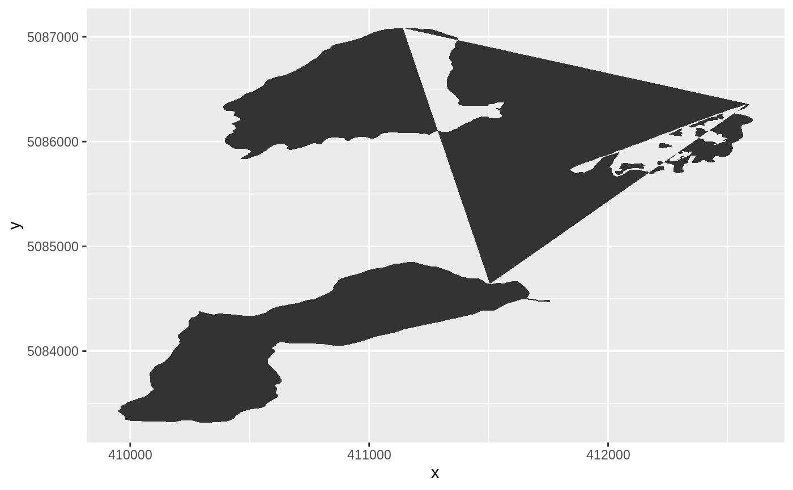

This geometry correctly plots polygons with holes in ggplot2 at the
expense of doing so (slightly) more slowly than geom_polygon. This
implementation fixes a bug in the ggpolypath package, which provides
similar functionality.
geom_polypath( mapping = NULL, data = NULL, stat = "identity", position = "identity", na.rm = FALSE, show.legend = NA, inherit.aes = TRUE, rule = "winding", ... )
| mapping | An aesthetic mapping, created with aes. The aesthetic
will mostly likely need to contain a |
|---|---|
| data | A data.frame containing the coordinates to plot. |
| stat | A statistic to apply (most likely "identity") |
| position | A position to apply (most likely "identity") |
| na.rm | Should missing coordinate be removed? |
| show.legend | Should a legend be shown for mapped aesthetics? |
| inherit.aes | Should aesthetics be inherited? |
| rule | A fill rule to apply. One of "winding" or "evenodd". |
| ... | Passed to the geom and/or stat. |
A ggplot2 layer
library(ggplot2) load_longlake_data() ggplot(df_spatial(longlake_waterdf), aes(x, y, group = piece_id)) + geom_polypath()